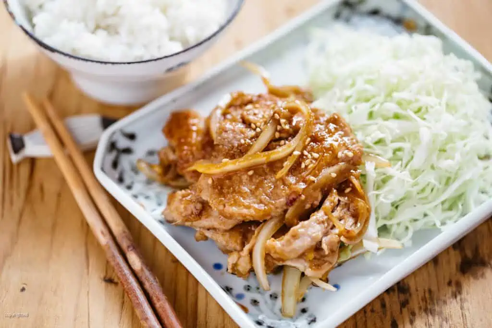

Shogayaki
Description
Shogayaki is a popular stir-fry Japanese dish. It features thinly sliced pork marinated in ginger and soy sauce. The dish is often served with a side of shaved cabbage, a dipping mayonnaise, and a small bowl of rice. Shogayaki was the first Japanese dish I learned to cook while living in Tokyo and has become my go-to showoff for friends and family.
How to Prepare
- Prepare the Ginger Sauce in a small bowl by combining:
- 1.5tbsp soy sauce
- 1 tbsp sake
- 1 tsp mirin
- 1 tbsp grated and pressed ginger
- Add 2tbsp of oil to a pan and heat on medium-low to medium heat.
- Thinly slice 300g of pork loin
- Slice one yellow onion
- Fry onions until slightly browned
- Add pork and cook until slightly browned. Be careful not to overcook the pork.
- Add the Ginger Sauce.
- Bring the sauce to a boil and stir. Continue stirring until the Ginger Sauce has reduced.
- Serve next to a bed of shaved cabbage, a bowl of rice, and mayonnaise for dipping. Don't forget to garnish the meat with chopped onions or toasted sesame seeds.
Ingredients
- Pork: Shogayaki traditionally calls for thinly sliced pork pork loin.
- Yellow Onions: into long threads works best.
- Ginger: Paste will work, but finely grated and pressed ginger will provide the best flavour and fragrances.
- Soy Sauce: Salty base used for the ginger sauce.
- Sake: Helps tenderize the pork and remove any gamey flavour.
- Mirin: Adds a sweetness to counter the salty soy sauce.
- Cooking Oil: Vegetable or canola oil work best.
- Garnish: Chopped spring onions or toasted sesame seeds to sprinkle over the pork.
Image and description taken from chopstickchronicles